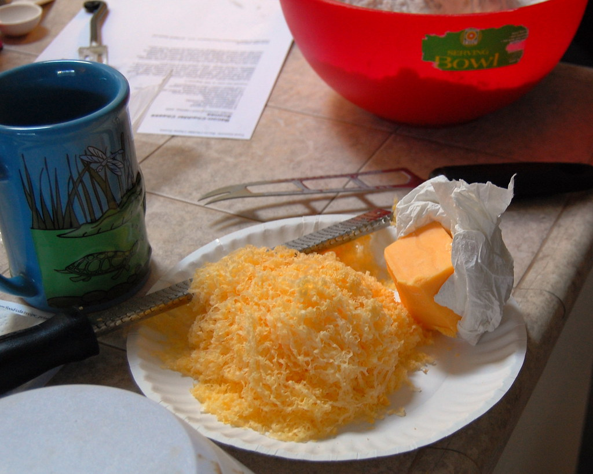
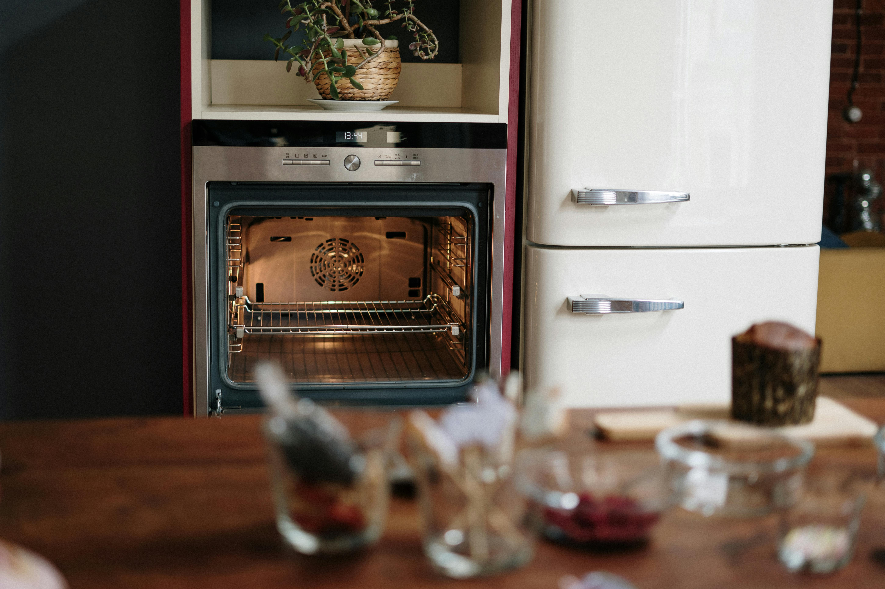
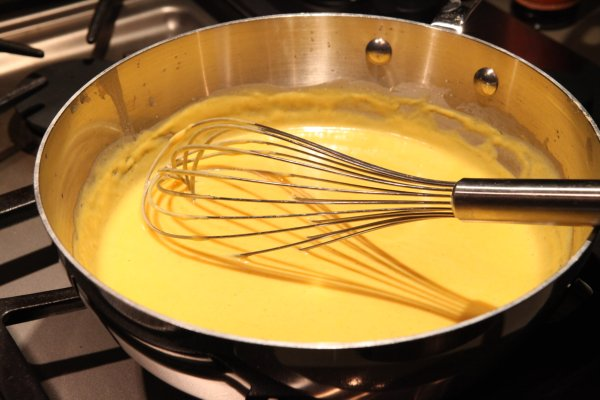
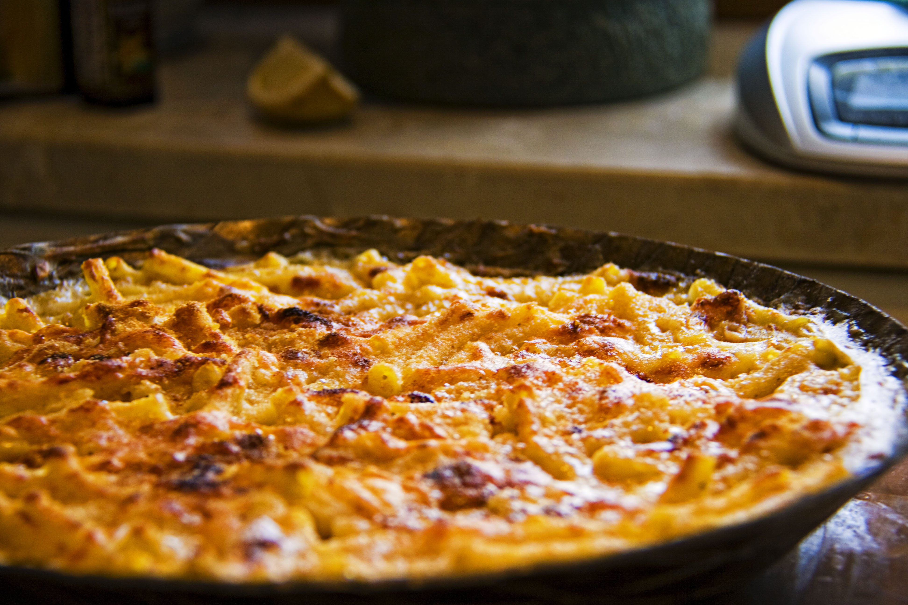

Step 1 - Gathering Ingredients
- 2 teaspoons salt
- 1 pound elbow macaroni
- 3 cups whole milk
- 4 tablespoons unsalted butter
- 1/4 cup all-purpose flour
- 5 cups shredded cheese
- 2/3 cup sour cream
- 1 teaspoon black pepper
- 2 teaspoons dry mustard
- 1/2 teaspoon ground nutmeg
- 2 teaspoons worcestshire sauce
- 2/4 teaspoon cayenne
You may use your choice of shredded cheese. However, I recommend cheddar cheese, specifically sharp cheddar. Mild cheddar is aged for 3 months, medium is aged for 6, sharp is aged for 9, and extra sharp is aged for 18 months or longer. The age of the cheddar you choose will affect both the taste and the texture. Mild, as the name suggests; will have a milder flavor in addition to a more rubbery texture. While extra sharp cheddar will have a stronger, tangier flavor and a more crumbly texture. I find that sharp cheddar is a good balance of these different traits, so it's not too overpowering. If you prefer a more creamy texture, you can also use a mix of both sharp and mild cheddar.
As for brands, since we are in Washington; I highly recommend Beecher's. They've won multiple awards from the American Cheese Society over the years. So you don't have to take my word for it. The experts agree. But if you prefer a little more convenience and accessibility, I have also had great results with Tillamook. They're a good balance between premium and affordable.
Step 2 - Preheat your oven to 400°F
Place a rack in the middle position in your oven. This will ensure even heating and allow Next, coat a baking dish with your choice of either butter or a cooking spray, then set it aside for later. Butter will add a bit of flavor, but it's not very noticable. While a spray will do a much better job at preventing your precious mac and cheese from sticking to your dish.
Step 3 - Bring a heavily salted pot of water to a boil

Once your water is boiling, you can cook your macaroni as instructed on the box, or until it's your desired texture.
Step 4 - Making the cheese sauce
- In a saucepan, set the heat to medium and warm up the milk (but do not boil it).
- In a large skillet, melt your butter on medium heat. Then gradually sprinkle in the flower and whisk. Be patient with this step and work slowly, ensuring that your roux is smooth, not clumpy. Next, add your milk from the saucepan and adjust the heat so the milk does not boil.
- Gradually add your shredded cheese to the mixture, whisking until smooth. Then add the sour cream and whisk until smooth again. Finally, add the black pepper, cayenne, dry mustard, and worcestershire sauce. Finally, season to taste with salt. Be careful with this step because the cheese you chose will have a significant impact on how much salt to add.
Step 5 - The finale
Add your cooked macaroni to your cheese sauce and mix until the macaroni is evenly coated. Transfer the mixture to your baking dish. Add your desired amount of extra grated cheese and a pinch of cayenne on top, then bake for 25-30 minutes at 400°F or until golden brown. Keep a close eye on the mac and cheese in the last 5 minutes of cooking as the top can quickly go from perfect to burned in this stage.
Resources
Images:
- 6oz Sharp Cheddar Cheese, by OctopusHat, taken in 2008 Source.
- White Top Mount Refrigerator Beside White Top Mount Refrigerator, by cottonbro studio, taken in 2020 Source.
- HK goods Barilla product chifferi 通心粉 macaroni food boiling July 2021 SS2 08, by RPIHSHCOATI 2007, taken in 2021 Source.
- cheese sauce, the cheesiest, by thepinkpeppercorn, taken in 2010 Source.
- Food Mob! mac and cheese, by ugod, taken in 2010 Source.